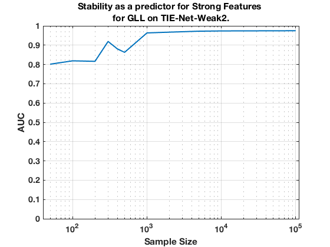

TIE-Net-Weak2. Summary. GLL.
summary_stability_type("ErrNet", 1)
TOTAL COUNTS: Total=1327, Strong=23, Weak=1300, Irrelevant=4
Figure 109. Stability as a predictor for Strong Features for GLL on TIE-Net-Weak2.
___________________________________________________________________________________

Table 109. Breakdown of Stability by Feature Type for GLL.
___________________________________________________________
(1) Number Features Repeat (n_fs_rep): number of unique features that were selected in a repeat
(2) Number Features Fold (n_fs_fold): number of unique features that were selected in a fold
(3) Feature Stability ~ Feature Selection Frequency
Sample_Size All_n_fs_rep All_n_fs_fold All_Stability
___________ _____________________ _____________________ ___________________
' 50 ' ' 10.520 +/- 0.063 ' ' 2.152 +/- 0.010 ' ' 0.002 +/- 0.010 '
' 100 ' ' 10.740 +/- 0.071 ' ' 2.394 +/- 0.012 ' ' 0.002 +/- 0.011 '
' 200 ' ' 10.040 +/- 0.068 ' ' 2.490 +/- 0.013 ' ' 0.002 +/- 0.015 '
' 300 ' ' 10.000 +/- 0.070 ' ' 2.426 +/- 0.013 ' ' 0.002 +/- 0.017 '
' 400 ' ' 13.060 +/- 0.064 ' ' 3.064 +/- 0.014 ' ' 0.002 +/- 0.017 '
' 500 ' ' 12.040 +/- 0.067 ' ' 2.870 +/- 0.014 ' ' 0.002 +/- 0.018 '
' 1000 ' ' 13.200 +/- 0.088 ' ' 3.268 +/- 0.018 ' ' 0.002 +/- 0.021 '
' 2000 ' ' 15.300 +/- 0.089 ' ' 3.820 +/- 0.018 ' ' 0.003 +/- 0.024 '
' 5000 ' ' 18.320 +/- 0.066 ' ' 4.632 +/- 0.014 ' ' 0.003 +/- 0.027 '
' 10000 ' ' 21.360 +/- 0.075 ' ' 5.264 +/- 0.012 ' ' 0.004 +/- 0.029 '
' 100000 ' ' 23.500 +/- 0.077 ' ' 5.934 +/- 0.014 ' ' 0.004 +/- 0.033 '
Sample_Size Strong_n_fs_rep Strong_n_fs_fold Strong_Stability
___________ _____________________ _____________________ ___________________
' 50 ' ' 2.740 +/- 0.031 ' ' 0.738 +/- 0.008 ' ' 0.032 +/- 0.063 '
' 100 ' ' 3.540 +/- 0.034 ' ' 0.956 +/- 0.007 ' ' 0.042 +/- 0.075 '
' 200 ' ' 3.540 +/- 0.025 ' ' 1.072 +/- 0.003 ' ' 0.047 +/- 0.102 '
' 300 ' ' 3.900 +/- 0.029 ' ' 1.196 +/- 0.006 ' ' 0.052 +/- 0.117 '
' 400 ' ' 4.680 +/- 0.035 ' ' 1.340 +/- 0.007 ' ' 0.058 +/- 0.111 '
' 500 ' ' 4.820 +/- 0.046 ' ' 1.426 +/- 0.009 ' ' 0.062 +/- 0.121 '
' 1000 ' ' 6.260 +/- 0.047 ' ' 1.830 +/- 0.011 ' ' 0.080 +/- 0.138 '
' 2000 ' ' 8.100 +/- 0.043 ' ' 2.298 +/- 0.009 ' ' 0.100 +/- 0.151 '
' 5000 ' ' 10.900 +/- 0.045 ' ' 3.034 +/- 0.010 ' ' 0.132 +/- 0.159 '
' 10000 ' ' 14.140 +/- 0.050 ' ' 3.844 +/- 0.010 ' ' 0.167 +/- 0.151 '
' 100000 ' ' 17.280 +/- 0.039 ' ' 4.742 +/- 0.008 ' ' 0.206 +/- 0.144 '
Sample_Size Weak_n_fs_rep Weak_n_fs_fold Weak_Stability
___________ _____________________ ___________________ ___________________
' 50 ' ' 7.620 +/- 0.070 ' ' 1.360 +/- 0.013 ' ' 0.001 +/- 0.003 '
' 100 ' ' 7.000 +/- 0.064 ' ' 1.390 +/- 0.012 ' ' 0.001 +/- 0.003 '
' 200 ' ' 6.280 +/- 0.061 ' ' 1.356 +/- 0.013 ' ' 0.001 +/- 0.003 '
' 300 ' ' 5.880 +/- 0.069 ' ' 1.142 +/- 0.014 ' ' 0.001 +/- 0.003 '
' 400 ' ' 8.180 +/- 0.065 ' ' 1.654 +/- 0.015 ' ' 0.001 +/- 0.003 '
' 500 ' ' 6.920 +/- 0.067 ' ' 1.384 +/- 0.014 ' ' 0.001 +/- 0.003 '
' 1000 ' ' 6.780 +/- 0.081 ' ' 1.392 +/- 0.017 ' ' 0.001 +/- 0.003 '
' 2000 ' ' 7.000 +/- 0.074 ' ' 1.474 +/- 0.016 ' ' 0.001 +/- 0.003 '
' 5000 ' ' 7.300 +/- 0.065 ' ' 1.550 +/- 0.015 ' ' 0.001 +/- 0.003 '
' 10000 ' ' 7.060 +/- 0.072 ' ' 1.388 +/- 0.015 ' ' 0.001 +/- 0.003 '
' 100000 ' ' 6.040 +/- 0.079 ' ' 1.144 +/- 0.016 ' ' 0.001 +/- 0.003 '
Sample_Size Irrelevant_n_fs_rep Irrelevant_n_fs_fold Irrelevant_Stability
___________ ___________________ ____________________ ____________________
' 50 ' ' 0.160 +/- 0.008 ' ' 0.054 +/- 0.004 ' ' 0.014 +/- 0.009 '
' 100 ' ' 0.200 +/- 0.008 ' ' 0.048 +/- 0.003 ' ' 0.012 +/- 0.009 '
' 200 ' ' 0.220 +/- 0.010 ' ' 0.062 +/- 0.004 ' ' 0.016 +/- 0.007 '
' 300 ' ' 0.220 +/- 0.008 ' ' 0.088 +/- 0.004 ' ' 0.022 +/- 0.027 '
' 400 ' ' 0.200 +/- 0.011 ' ' 0.070 +/- 0.004 ' ' 0.017 +/- 0.016 '
' 500 ' ' 0.300 +/- 0.015 ' ' 0.060 +/- 0.003 ' ' 0.015 +/- 0.005 '
' 1000 ' ' 0.160 +/- 0.008 ' ' 0.046 +/- 0.005 ' ' 0.011 +/- 0.014 '
' 2000 ' ' 0.200 +/- 0.009 ' ' 0.048 +/- 0.003 ' ' 0.012 +/- 0.008 '
' 5000 ' ' 0.120 +/- 0.008 ' ' 0.048 +/- 0.004 ' ' 0.012 +/- 0.013 '
' 10000 ' ' 0.160 +/- 0.008 ' ' 0.032 +/- 0.002 ' ' 0.008 +/- 0.010 '
' 100000 ' ' 0.180 +/- 0.009 ' ' 0.048 +/- 0.003 ' ' 0.012 +/- 0.010 '